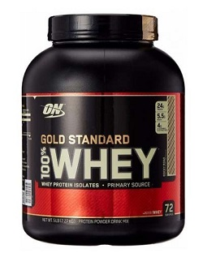
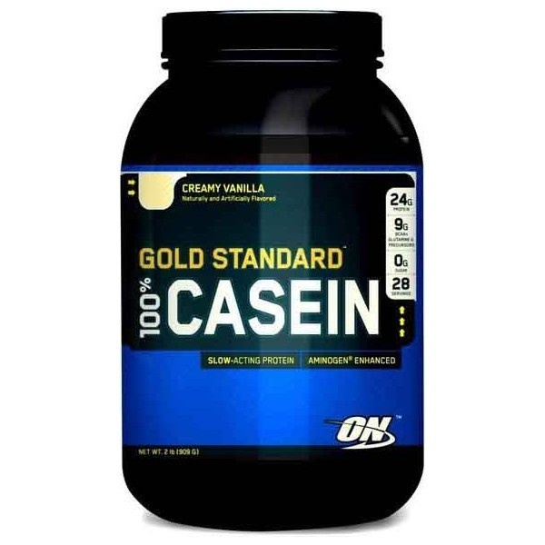

Содержание
Питание культуристов
Не существует единственной формулы успеха, нет однозначного бесспорного меню питания спортсменов. Мы предлагаем читателю несколько рекомендаций от опытных диетологов и тренеров чемпионов.Пища любого человека состоит из комбинаций следующих основных ингредиентов: углеводы, жиры , белки (протеины), вода, витамины, минералы, микроэлементы.
Углеводы - основной источник энергии, они обязательны в меню атлета. Если их недостаточно, то для получения энергии организм использует в первую очередь протеины, и только потом – жиры. Углеводы также необходимы для полного окисления (сжигания) жиров.Энергетическая ценность углеводов – 4 ккал/грамм. Рекомендуемая суточная норма потребления : 3-6 г углеводов на 1 кг веса атлета. Опытные культуристы советуют сочетать высокобелковые продукты с белково-углеводными комплексами (гейнерами) или дополнять протеиновые коктейли энергетическими коктейлями и напитками.
Энергетические концентраты приготовлены из комплексных углеводов с добавлением витаминов, минералов. Для восполнения энергии и восстановления водного баланса их полезно принимать и во время тренировки, и после нее.
Жиры– участвуют в поддержании оптимального здоровья и в определенном количестве необходимы для организма. Жиры защищают внутренние органы от внешних воздействий, обеспечивают энергией и незаменимыми жирными кислотами.
В жировых тканях хранятся многие витамины. В обычном рационе жиры присутствуют в избытке. Например, в постном куске мяса только 20% белка, а остальное - жиры, вода, различные балластные вещества и немного витаминов и минералов.Энергетическая ценность жиров: 9 ккал/грамм.
Рекомендуется атлетам включать в суточный рацион жиры, исходя из расчета 0,6-0,8 г на 1 кг веса тела. Также рекомендуется сократить потребление тугоплавких насыщенных жиров, к которым относятся сало, маргарин, сливочное масло, копчёная колбаса и предпочесть им растительные жиры.Очень полезны жиры, именуемые «Омега-3», содержащиеся в морепродуктах, рыбьем жире или в биодобавках «Омега-3».
Омега-3- группа ненасыщенных жирных кислот, в которую входят 11 полиненасыщенных жирных кислот, 3 из которых ( ALA, EPA и DHA ) являются незаменимыми(не воспроизводятся в организме в необходимом объёме, а при их недостатке возникают разнообразные биохимические и физиологические нарушения).
В желудке человека протеины расщепляются на отдельные аминокислоты, которые всасываются в кровь и кровяным потоком доставляются к мышечным тканям, где из этих аминокислот вновь создаются белки уже в структуре этих мышечных волокон (синтез белков). Метаболизм (метаболические процессы) – это превращение веществ в клетках организма с момента поступления веществ в организм и до образования конечных продуктов. Помимо синтеза новых мышечных тканей протеины питают иммунную систему (BCAA, глютамин, аланин), способствуют восстановлению поврежденных тканей, суставов, связок. При дефиците энергии протеины используются в качестве энергетического источника. 1 грамм протеина при окислении дает 4,0 ккал. Причем источником энергии могут служить не только пищевые протеины, но и при определённых условиях протеины, извлекаемые из мышц. Такой распад собственных мышечных тканей человека и использование мышечных протеинов для деятельности организма называется катаболизмом. Наоборот, создание (синтез) сложных молекул мышечных протеинов из поступающих с кровью аминокислот, называется анаболизмом.
Виды протеинов, выпускаемых в виде концентратов
Существует несколько видов протеинов - сывороточный, яичный, мясной, рыбный, растительный(рисовый, пшеничный, соевый и др.). По рейтингу эффективности лидируют сывороточный и яичный протеины. Яичный протеин (белок) считается эталонным, относительно него измеряют показатели других протеинов. Но яичный белок дорог в производстве, а в желтке помимо протеинов содержится много жиров. Поэтому желток обычно не используется. Яичному и сывороточному несколько уступает молочный белок (казеин), далее идет соевый.
Что касается мясного, рыбного, растительных протеинов, то они хуже усваиваются организмом, их производят только некоторые фирмы. Виды протеинов отличаются друг от друга по составу аминокислот, имеют разное количество жиров, факторов роста и др. Биологическая ценность животных протеинов выше, чем растительных, т.к. в их составе больше незаменимых аминокислот. Сывороточный протеин очень быстро усваивается (20-30 мин.), стимулирует синтез мышечного протеина. Укрепляет иммунитет и обладает антираковыми свойствами. Он незаменим при приёме сразу после тренировки.
Яичный протеин обладает отличным качеством и усвояемостью, но вследствие дороговизны не очень распространён.
Молочный протеин (казеин) обладает высокой ценностью, но медленно усваивается. Он очень хорош при приёме на ночь и в дни отдыха, когда требуется длительное равномерное поддержание уровня аминокислот в крови.
Известно, что глюкоза служит питанием для мозга, для центральной нервной системы. При недостатке глюкозы в крови (большие нагрузки или длительные перерывы в питании, в т.ч. ночью) глютамин, аланин и важнейшие аминокислоты ВСАА изымаются из мышц, печени для переработки в глюкозу. Также из мышц и из печени извлекается гликоген (отложенная про запас глюкоза) для его обратного преобразования в глюкозу. Таким образом поддерживается работа головного мозга. Т.е. ночью и днём наши мышцы «тают», а тренировочные нагрузки резко форсируют этот процесс. Вот почему важно утром, сразу после пробуждения, принять углеводно-белковый коктейль для восстановления уровня гликогена и аминокислот после ночного катаболизма. Сразу после тренировки необходим приём сывороточного протеина, по возможности с добавлением креатина, глютамина и ВСАА, а через полчаса после протеина выпить углеводный энергетик. Можно все это объединить и выпить белково-углеводный гейнер на основе сывороточного протеина. Вечером предпочтительна белковая пища, а на ночь – «долгоиграющий» коктейль: молочный, соевый или их комбинация с добавлением глютамина. Соевый протеин полезен тем, что снижает уровень холестерина в крови, он дешевле в производстве и доступнее по цене. Но как и все остальные растительные белки, он усваивается хуже и медленнее, чем ранее упомянутые протеины. В составе соевого белка отсутствует одна аминокислота (метионин), поэтому для восстановления его полноценности соевый протеин желательно употреблять вместе с молочной или животной пищей, или с другими протеинами. Соевый с молочным протеины – отличный продукт на ночь и в дни отдыха от тренировок.
Специалисты изучили состав женского грудного молока и установили, что в нём содержится в среднем около 60% сывороточного белка и около 40% казеина (молочного белка). Из этого видно, что оптимальным сочетанием является сывороточно-молочный протеин, обеспечивающий фазу быстрого подъёма уровня аминокислот в крови (20-30 мин.) и фазу поддержания этого достигнутого уровня в течение примерно 2-х часов.
Витамины, минералы
ВИТАМИНЫ – органические соединения. Объём пищевого приёма витаминов невелик, однако их ценность огромна. Они необходимы для нормального протекания физиологических и метаболических процессов в организме. Витамины ускоряют синтез белка в мышцах. Недостаток витаминов снижает работоспособность, умственные и физические возможности, вызывает заболевания. Большая часть необходимых витаминов не производится организмом и должна поступать с пищей.
Минералы, входящие в состав различных соединений, и отдельные микроэлементы – это неорганические вещества, необходимые для поддержания и регулирования обменных процессов организма. Потребность в витаминах и минералах резко вырастает при увеличении физических нагрузок. Существует правило : чем больше нагрузка, тем больше витаминов! С одной оговоркой - их нельзя принимать на голодный желудок, только с едой.
Аминокислоты
Незаменимые аминокислоты не могут синтезироваться в организме, они должны поступать только с пищей. Заменимые аминокислоты, в случае их нехватки в рационе, могут производиться в самом организме из числа незаменимых аминокислот. Квази (условно) незаменимые обычно могут, подобно заменимым, производиться в организме. Но в некоторых неблагоприятных ситуациях их синтез становится невозможным. Для устранения дефицита аминокислот производители спортивного питания выпускают как аминокислотные комплексы, так и отдельные аминокислоты в порошке, таблетках, капсулах, жидком виде – это быстрое и полноценное усвоение. В отличие от протеинов, проходящих в желудке предварительное расщепление на отдельные аминокислоты, готовые аминокислотные комплексы сразу поступают в кровь, полностью усваиваются и действуют уже через 15 минут после приёма. Аминокислотные комплексы включают все необходимые 20 аминокислот. Они устраняют дисбаланс потребляемой пищи, облегчают жизнь атлетам, страдающим заболеваниями желудка и плохим усвоением пищи. Аминокислотные комплексы усиливают действие протеиновых концентратов. Дневная норма : 7-10 г. Принимают перед едой и сразу после тренировки. Помимо аминокислотных комплексов отдельно выпускаются наиболее важные аминокислоты глютамин и ВСАА и некоторые другие. Термин ВСАА – это сокращение от английского “Branched Chain Amino Acids”, т.е. аминокислоты с разветвлённой цепью. В состав ВСАА входят 3 аминокислоты: лейцин, изолейцин и валин.
Валин обеспечивает человека энергией, способствует росту и регенерации тканей, необходим для нормального функционирования мозга, регулирует азотистый баланс в организме. Основной источник - животные продукты.
Изолейцин является материалом-основой для белков. Эта аминокислота – неизменный участник процесса энергообмена, в том числе и на уровне клеток. Помимо этого, изолейцин защищает организм от чрезмерной выработки серотонина путем ограничения триптофану доступа к клеткам мозга.
Лейцин поставляется всеми продуктами, содержащими полноценный белок - мясом, птицей, рыбой, яйцами, молочными продуктами. Необходим не только для синтеза протеина организмом, но и для укрепления иммунной системы.
Метионин важен в метаболизме жиров и белков. Является основным поставщиком серы, которая предотвращает расстройства в формировании волос, кожи и ногтей; способствует понижению уровня холестерина, усиливая выработку лецитина печенью; понижает уровень жиров в печени, защищает почки; участвует в выводе тяжёлых металлов из организма; регулирует образование аммиака и очищает от него мочу, что понижает нагрузку на мочевой пузырь; воздействует на луковицы волос и поддерживает рост волос. Источники - мясо, яйца, красная икра, рыба, творог, твердые сыры, орехи и бобовые.
Триптофан - является первичным по отношению к ниацину и серотонину, который, участвуя в мозговых процессах, управляет аппетитом, сном, настроением и болевым порогом. Естественный релаксант, помогает бороться с бессонницей, вызывая нормальный сон; оказывает помощь при борьбе с депрессией и с состоянием беспокойства ; помогает при лечении головных болей при мигренях; укрепляет иммунную систему; уменьшает риск спазмов артерий и сердечной мышцы.